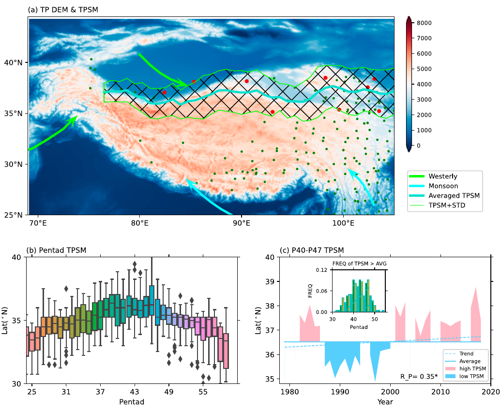
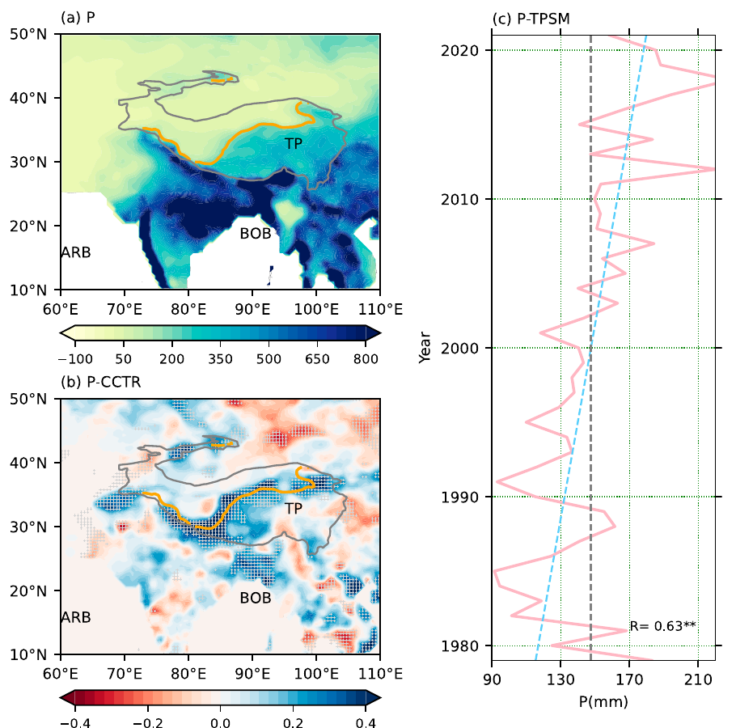
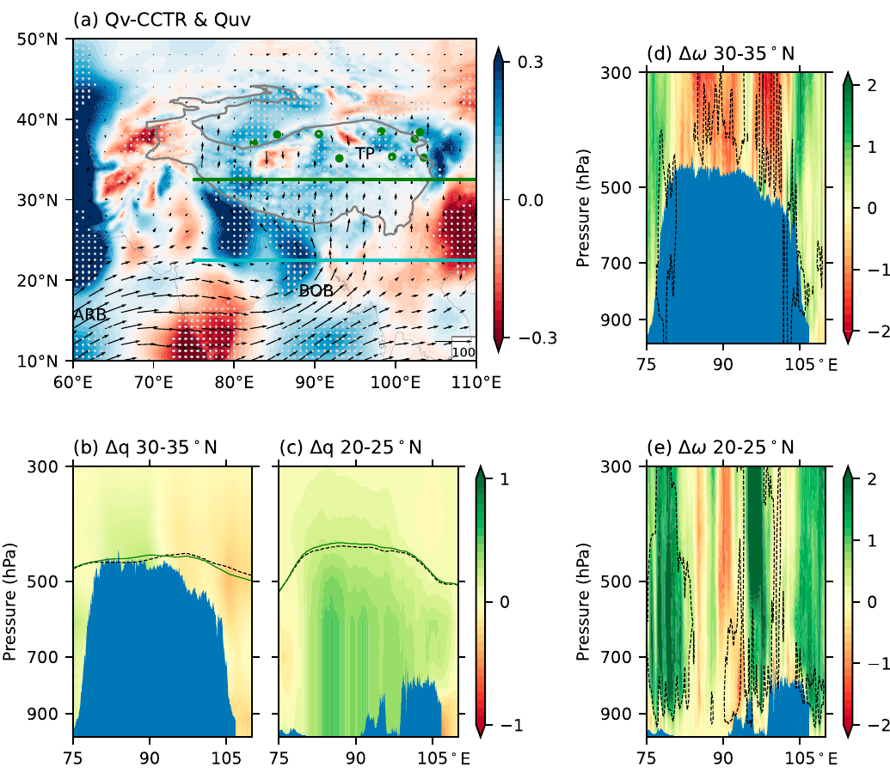
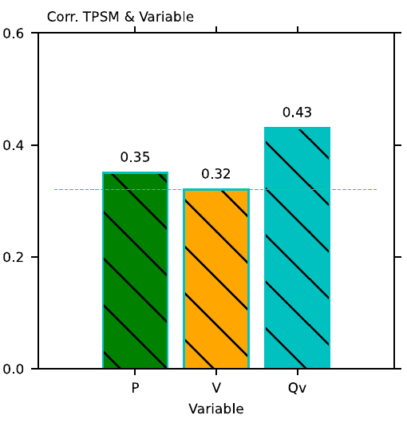
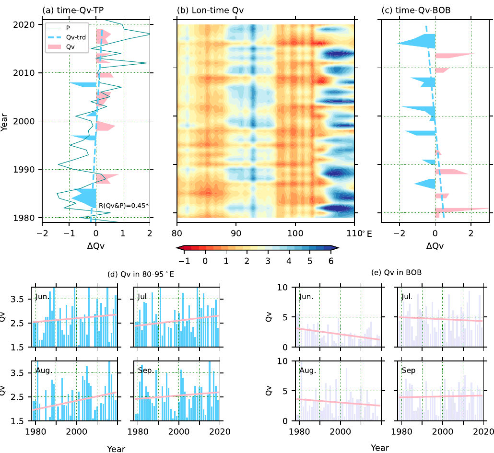
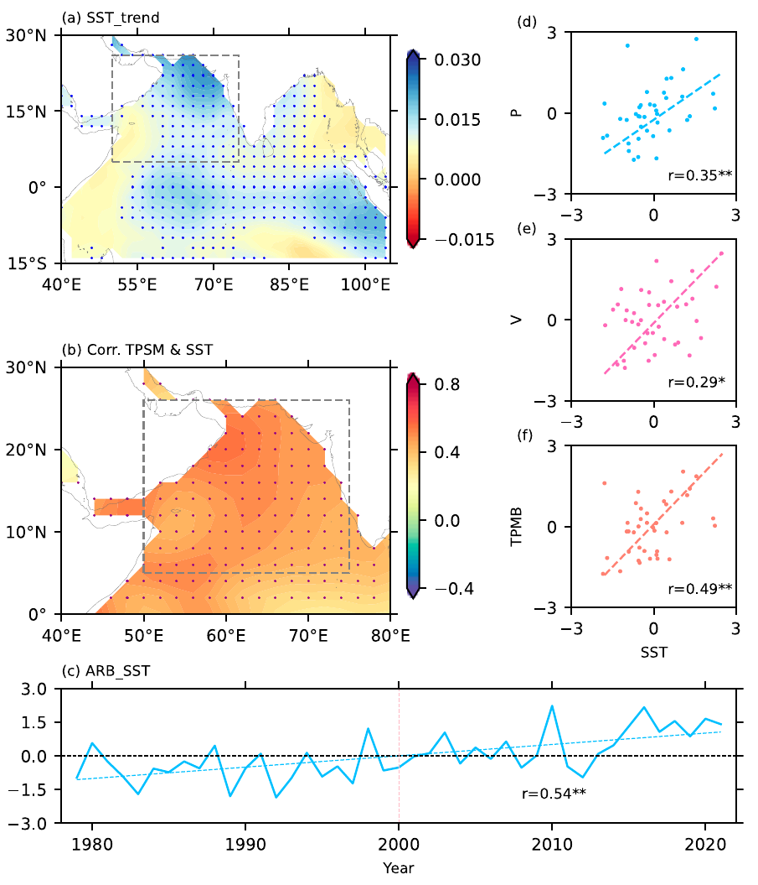
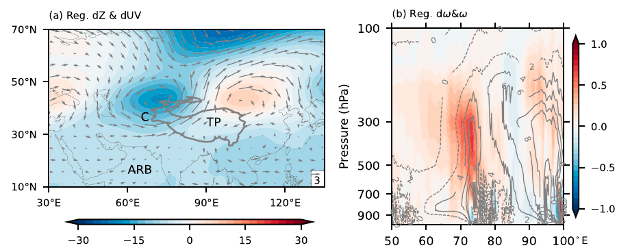
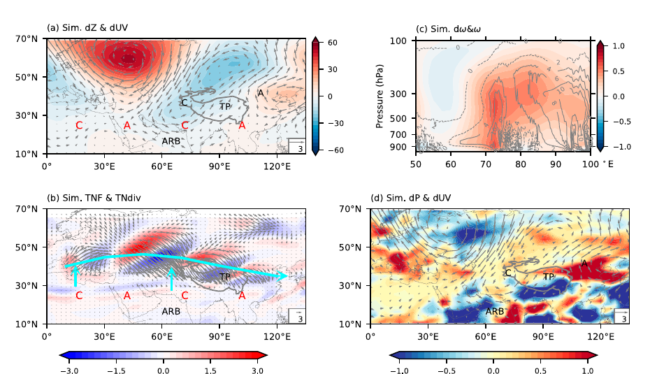
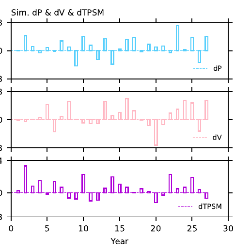
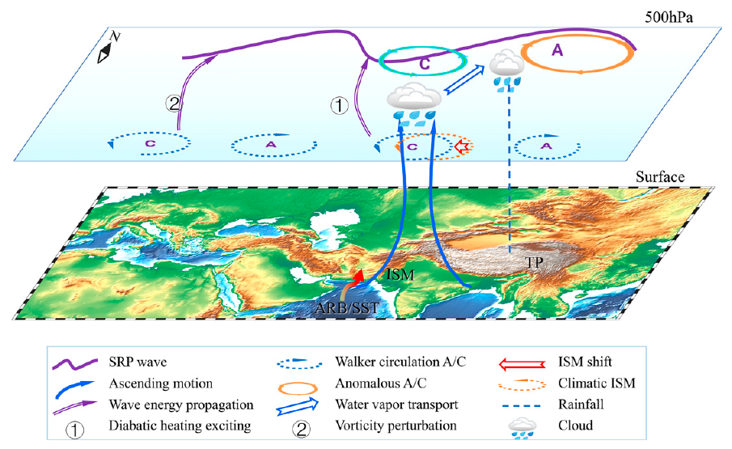

阿拉伯海增温引起青藏高原夏季风北移
The Warming of the Arabian Sea Induced a Northward Summer Monsoon over the Tibetan Plateau
摘要
Abstract
青藏高原（TP）夏季风降水对生态、经济和亚洲气候具有重要影响，但自 21 世纪初以来，其空间分布出现了异常。
Summer monsoon precipitation over the Tibetan Plateau (TP) has significant impacts on the ecology, economy, and Asian climate, but has exhibited anomalous spatial distribution since the early twenty-first century.
为探究其分布及成因，本研究考察了青藏高原夏季风（TPSM）的最北边界及其相关降水。
To explore its distribution and attribution, this study investigated the northernmost boundary of the summer monsoon over the TP (TPSM) and the related precipitation.
2000 年以后，春末夏初阿拉伯海海表温度（ARB_SST）升高，使 TPSM 及相关降水向极地一侧扩展。
The TPSM and related precipitation extended poleward in the post-2000 period in response to the rising Arabian Sea surface temperature (ARB_SST) in the late spring and early summer.
阿拉伯海增暖使印度夏季风（ISM）环流向西移动，并使水汽在更厚的水汽层内辐合，由此激发中纬度波列，并在青藏高原上呈现偶极型——西侧为气旋、东侧为反气旋。
A warming Arabian Sea leads to the westward movement of the Indian summer monsoon (ISM) circulation and moisture convergence with a higher moisture layer, which exerts a midlatitude wave train that exhibits a dipole mode (a west cyclone and an east anticyclone) over the TP.
其结果是西侧槽和偏南风增强，有利于将 ISM 区水汽层中的更多水汽经青藏高原中西部向北输送。
Consequently, the west trough and southerly are strengthened, which is conducive to transporting more poleward moisture mass from the moisture layer over the ISM zone through the midwestern TP.
此外，这一过程通过与偶极型耦合，促使 TPSM 向极地一侧扩展，并增加青藏高原北部降水。
Furthermore, it contributes to the poleward TPSM and precipitation in the northern TP by coupling with the dipole mode.
这些发现有助于解释亚洲干旱区的湿润化及其对北半球气候的影响。
These findings help explain the wetting of the Asian dryland and its effects on the Northern Hemispheric climate.
关键词：动力学；气候敏感性；水汽；季风；降水
Keywords: Dynamics; Climate sensitivity; Water vapor; Monsoons; Precipitation
1. 引言
1. Introduction
青藏高原（TP）是世界上海拔最高、面积最大的高原，平均海拔超过 4000 m，占亚洲面积的五分之一。
The Tibetan Plateau (TP) is the world’s highest and largest plateau, averaging over 4000 m above sea level and spanning one-fifth of the Asian region.
青藏高原的高大地形形成独特的山地屏障和热力作用，使高原及周边地区同时受到西风和热带偏南风活动的影响（Mölg et al. 2014）。
The high TP topography causes unique montane barriers and thermodynamic effects, leading to westerly and tropical southerly wind activity over the TP and the surrounding area (Mölg et al. 2014).
一般而言，冷季青藏高原强烈受冷西风影响，地表因而冻结并被积雪覆盖；高反照率及对短波辐射的反射使其成为冷源。
Generally, the TP is severely influenced by cold westerlies during cold seasons, which are responsible for frozen ground and snow cover; consequently, the TP acts as a cold source because of its high albedo and reflection of short radiation.
而在暖季，低反照率和对短波辐射的吸收使青藏高原成为热源，并与季风环流及较高的土壤湿度相对应（Wu et al. 2017）。
However, during warm seasons, the TP acts as a heat source because of its low albedo and absorption of short radiation, corresponding to monsoon circulation and relatively high soil moisture (Wu et al. 2017).
青藏高原作为热源的重要性还在于其位于对流层中层，其温度和非绝热加热均高于同一高度的其他地区。
The TP, as a heat source is important because it occurs in the middle troposphere and its temperature and diabatic heating is higher than that in other regions at the same level.
强热源会加强青藏高原低压以及高原与周边地区之间的热力差异；因此，高原大部受辐合水汽气流影响，而该气流与印度夏季风（ISM）和东亚夏季风（EASM）有关。
Strong heat sources enhance the low pressure and thermal contrast between the TP and its surrounding area; consequently, most areas of the TP are influenced by convergent moisture flow, which is associated with the Indian summer monsoon (ISM) and East Asian summer monsoon (EASM).
上述出现在青藏高原上的季风环流及相关水汽输送被定义为高原季风。
The aforementioned monsoon circulation and related moisture flow occurring over the TP are defined as TP monsoons.
1957 年，学界首次提出暖季气旋性环流驱动辐合的偏南风及热带水汽向青藏高原输送。
In 1957, cyclone circulation was initially proposed, which drives convergent southerly and tropical moisture masses to the TP in the warm season.
这种气旋性环流与整个冷季控制青藏高原的反气旋环流及寒冷干燥的西风相反（Tang et al. 1979）。
The cyclone is contrary to the circulations of anticyclone and the cold–dry westerly during the entire cold season over the TP (Tang et al. 1979).
随着青藏高原夏季风（TPSM）爆发，西风后退与偏南风向极地推进同步发生。
Along with summer monsoon onset over the TP (TPSM), westerly retreats co-occur with southerly advances poleward over the TP.
因此，TPSM 通常主导东南湿润、西北干燥的气候格局（Duan et al. 2013），并由此造成非均匀的经向非绝热加热。
Therefore, the TPSM generally dominates the climate mode of the wet southeast and dry northwest (Duan et al. 2013), which results in nonuniform meridional diabatic heating.
TPSM 还利于凝结潜热释放，并进一步加强对流层上层的南亚高压（Ye and Gao 1979）。
The TPSM also favors the release of condensation latent heat and further strengthens the South Asian high over the upper troposphere (Ye and Gao 1979).
由此，青藏高原因其对气候系统环流、能量和水文循环的动力与热力影响，被视为具有重要研究价值的区域（Liu et al. 2017; Wu et al. 2017）。
In this case, the TP is recognized as a potentially valuable area in terms of its dynamic and thermodynamic influences on the circulation, energy, and hydrological cycles of the climate system (Liu et al. 2017; Wu et al. 2017).
TPSM 与青藏高原温度和感热通量的非对称分布密切相关。
The TPSM is closely related to the asymmetric distributions of temperature and sensible heat flux over the TP.
青藏高原增温减小了高原与印度洋之间的热力差异，使副热带急流北移，有利于寒冷西风环流向极地一侧退缩和亚洲季风爆发（Liu et al. 2017）。
The rising temperature over the TP decreases the thermal contrast between the TP and the Indian Ocean, which leads to a northward shift of the subtropical jet, favoring the poleward retreating of the cold westerly circulation and the onset of the Asian monsoon (Liu et al. 2017).
春季地表感热通量强于地表潜热通量（Wu et al. 2017），从而在青藏高原上形成强气旋性环流，并促进副热带水汽辐合。
The surface sensible heat flux during the spring prevails over the latent heat flux at the ground surface (Wu et al. 2017), which results in strong cyclonic circulation over the TP and correspondingly contributes to convergence of the subtropical moisture mass.
因此，与非绝热加热有关的气旋是 TPSM 的主导环流。
Thus, diabatic heating-related cyclones are the dominant TPSM circulation.
伴随全球变暖，青藏高原的升温速率已提高到平均水平的两倍（Xu et al. 2009），并引发冰川萎缩、积雪提前融化以及晚雪事件（Kraaijenbrink et al. 2017）。
Concurrent with global warming, the warming rate over the TP has increased to twice the average level (Xu et al. 2009), which has triggered glacier shrinking, early snow melting, and the occurrence of later snow (Kraaijenbrink et al. 2017).
因此，气候变暖已使青藏高原温度和水体相态发生显著变化，同时伴随地表及大气非绝热加热的显著改变。
Thus, climate warming has led to remarkable variations in the TP temperature and water phase, being accompanied by significant changes in surface and atmospheric diabatic heating.
非绝热加热进而驱动异常低压，从低纬海洋向青藏高原和东亚抽吸更多水汽，并将水汽由对流层低层向上层输送，从而调制偏南季风环流和 TPSM（Wang et al. 2019）。
Consequently, diabatic heating drives anomalous low pressure that pumps an increased amount of moisture mass from low-latitude oceans to the TP and East Asia and transfers water vapor from the lower to the upper troposphere, modulating the southerly monsoon circulations and TPSM (Wang et al. 2019).
然而，现有研究在揭示 TPSM 位置变化及其影响因子方面仍有局限。
However, studies have shown limitations in the variations and impact factors of the TPSM position.
除青藏高原热力条件外，已有文献表明，暖印度洋海盆模态（IOBM；Niu et al. 2022）不仅会加强印度洋热带对流，还会影响 TPSM 环流。
Except for proving thermal conditions over TP, the literature has proven that the warm Indian Ocean basin mode (IOBM; Niu et al. 2022) not only strengthens tropical convection over the Indian Ocean but also influences the circulation of the TPSM.
Wang and Duan（2015）指出，暖 IOBM 条件下，相当位温升高会使对流层低层失稳，并促进水汽向青藏高原平流输送。
Wang and Duan (2015) suggested that the enhanced equivalent potential temperature results in the destabilization of the lower troposphere, which occurs under the warm IOBM and contributes to moisture advection toward the TP.
此外，偏南风对热带水汽通量的作用已得到识别，这一作用有利于 TPSM 的发展和维持。
Moreover, the effects of southerly winds on tropical moisture flux have been identified, which facilitates the development and maintenance of the TPSM.
夏季热带对流加热也会与青藏高原非绝热加热相互作用，并呈现加热偶极型（Hu and Duan 2015; Jiang and Ting 2017）。
Tropical convection heating also interacts with the TP diabatic heating in summer and exhibits a dipole mode of heating (Hu and Duan 2015; Jiang and Ting 2017).
Zhang et al.（2019）发现，青藏高原东部和 ISM 区的非绝热加热呈反向变化，并通过两个遥相关相连；同时观测到涉及青藏高原、印度半岛和中国北方的三极降水型。
Zhang et al. (2019) found reverse variation in the diabatic heating between the eastern TP and the ISM domain with two teleconnections, and observed a tripole precipitation pattern involving the TP, Indian Peninsula, and northern China.
青藏高原东部与 ISM 区之间的偶极和三极模态，控制着两支输往青藏高原和亚洲干旱区的水汽，二者分别源自阿拉伯海和孟加拉湾（BOB）（Zhao et al. 2022）。
The dipole and tripole modes among the eastern TP and ISM domain govern two branches of water vapor transported to the TP and the Asian dryland, which originate from the Arabian Sea and the Bay of Bengal (BOB), respectively (Zhao et al. 2022).
已有研究指出，ISM 云团及水汽平流可跨越青藏高原南部，从而加强 TPSM（Zhou et al. 2022）。
As reported in the literature, the ISM cloud mass and moisture advection can be transported across the southern TP, enhancing the TPSM (Zhou et al. 2022).
伴随经孟加拉湾通道的 ISM 变化（Chen et al. 2012; Yao et al. 2013），TPSM 自 21 世纪初以来发生显著的年代际转变（Tang 1995），而现场观测证实青藏高原北部夏季降水增加，并延伸至亚洲干旱区。
Along with the ISM change through the BOB (Chen et al. 2012; Yao et al. 2013), a significant decadal shift of the TPSM has occurred since the early twenty-first century (Tang 1995), and in situ observations verify an increase in summer precipitation over the northern TP, extending to Asian drylands.
这些变化与 TPSM 环流扩展有关（Zhang et al. 2021），却与 ISM 位置的异常经向移动相矛盾。
These variations are linked to the expanding TPSM circulation (Zhang et al. 2021) but contradict the anomalous meridional movement of ISM positions.
因此，有必要研究 TPSM 异常的成因及其与 ISM 异常之间的联系。
Therefore, investigating the causes of the TPSM anomalies and their linkage with ISM anomalies is necessary.
鉴于动力作用和外强迫都会影响 TPSM/ISM，本研究考察了 TPSM 的变化。
As dynamical effects and external forcing factors influence TPSM/ISM, this study investigated TPSM variations.
本研究利用欧洲中期天气预报中心（ECMWF）逐日再分析资料（ERA5），分析过去 42 年（1979—2020 年）TPSM 最北边界的变化，并考察其与青藏高原南部经向风和经向水汽通量的关系。
Using daily European Centre for Medium-Range Weather Forecasts (ECMWF) reanalysis data (ERA5), the variations in the northernmost boundaries of the TPSM in the past 42 years (1979–2020) were analyzed, and their relationships with meridional wind and meridional moisture flux over the southern TP were investigated.
随后，研究进一步探讨了动力过程以及海表温度（SST）与 TPSM 之间可能存在的关系。
Next, the dynamic processes and possible relationships between sea surface temperature (SST) and the TPSM were explored.
2. 数据与方法
2. Data and methods
本研究所用数据如下。
The data used in this study were obtained as follows.
第一，全球大气环流资料（包括垂直速度、位势高度、比湿和气温）取自 ERA5（https://cds.climate.copernicus.eu/；Hersbach et al. 2020），水平分辨率为 0.25° × 0.25°。
First, the global atmospheric circulation data, including vertical velocity, geopotential height, specific humidity, and air temperature, were obtained from ERA5 (https://cds.climate.copernicus.eu/; Hersbach et al. 2020), with a horizontal resolution of 0.25° × 0.25°.
ERA5 还用于计算与降水、TPSM 位置、西风及 ISM 环流相关的水汽通量。
ERA5 was also used to calculate the moisture flux linked with the precipitation, TPSM position, westerlies, and ISM circulation.
第二，使用水平分辨率为 0.5° × 0.5° 的 CPC 逐日降水资料（https://psl.noaa.gov/data/gridded/data.cpc.globalprecip.html）研究 TPSM 最北边界上的降水；该资料在包括青藏高原在内的多个地区均已被证明适用（Ma et al. 2021）。
Second, the daily CPC precipitation at 0.5° × 0.5° resolution (https://psl.noaa.gov/data/gridded/data.cpc.globalprecip.html) was used to investigate precipitation on the northernmost boundary of the TPSM; its suitability in various areas, including the TP, has been proven (Ma et al. 2021).
第三，1979—2021 年月平均 SST 资料取自哈德莱中心海表温度数据集（HadISST），水平分辨率为 1° × 1°（Rayner et al. 2003）。
Third, the monthly mean SST data were derived from the Hadley SST dataset (HadISST) with a horizontal resolution of 1° × 1° for 1979–2021 (Rayner et al. 2003).
最后，30 m 地形资料取自先进星载热发射和反射辐射仪（ASTER）全球数字高程模型 V2（https://search.earthdata.nasa.gov/）。
Finally, the 30-m terrain data were collected from the Advanced Spaceborne Thermal Emission and Reflection Radiometer (ASTER) Global Digital Elevation Model V2 (https://search.earthdata.nasa.gov/).
依据风向、水汽通量差异、西风与偏南风辐合带、逐候降水以及两侧显著不同的干湿状况，本文定义 TPSM 最北边界以描述 TPSM 的位置；该边界根据下列逐候条件判定（Zhang et al. 2016）。
Based on the wind direction, the moisture flux differences, convergence belt of westerly and southerly winds, precipitation in every pentad, and dry/wet conditions are distinct on both sides, and the northernmost boundary of the TPSM is defined to describe the TPSM position, which is discriminated according to the following pentad factors (Zhang et al. 2016).
其中，Vd 为 500 hPa 风向；以格点 (i, j) 为参照，s 表示格点 (i, j − 1)，n 表示格点 (i, j + 1)，i 和 j 分别为经度和纬度的序号；u 和 υ 分别为 500 hPa 纬向风和经向风；D 为水汽通量散度；θ 为 500 hPa 逐候假相当位温；p 为逐候总降水量。
Here Vd is the 500-hPa wind direction; using one grid (i, j) as a reference, s is the grid (i, j − 1), n is the grid (i, j + 1), i and j are order numbers of longitude and latitude, respectively; u and υ are 500-hPa zonal wind and meridional wind, respectively; D is water vapor flux divergence; θ is pentad pseudoequivalent potential temperature at 500 hPa; and p is pentad total precipitation.
其余所有变量均为逐候平均结果。
All other variables are pentad averaged results.
选择 500 hPa 是因为青藏高原平均海拔为 4000 m，接近 600 hPa；因此，500 hPa 可表征青藏高原上空对流层低层特征。
We selected 500 hPa because the average height of the TP is 4000 m, close to 600 hPa; therefore, 500 hPa might indicate low troposphere characteristics over the TP.
采用 Takaya and Nakamura（2001）提出的波活动通量方法检验在中纬度传播的波动型态。
The wave activity flux method proposed by Takaya and Nakamura (2001) is used to verify the wave pattern propagating in the midlatitudes.
此外，计算气候趋势率和相关系数，并用蒙特卡洛方法检验显著性。
In addition, the climatic trend rates and correlation coefficients are calculated, and the Monte Carlo method is applied to verify the significance.
美国国家大气研究中心开发的群体地球系统模式（CESM1.4，第 4 版）是一套由大气（CAM）、海洋、陆面和海冰模式组成的耦合气候模式（Hurrell et al. 2013）。
The Community Earth System Model (CESM1.4, version 4) developed by the National Center for Atmospheric Research is a coupled climate model composed of models for the atmosphere (CAM), ocean, land, and sea ice (Hurrell et al. 2013).
模式各分量可从 https://www.cesm.ucar.edu/models/cesm1.0/ 获取。
Model components are available at https://www.cesm.ucar.edu/models/cesm1.0/.
大气分量为群体大气模式 5.1 版（CAM5.1），采用有限体积动力框架，水平分辨率为 1.9° × 2.5°，在 σ–p 垂直坐标中设有 30 层。
The atmospheric component is the Community Atmospheric Model version 5.1 (CAM5.1) with a finite-volume dynamic framework with a horizontal resolution of 1.9° × 2.5° and 30 vertical layers of the σ–p vertical coordinates.
本研究利用该模式考察阿拉伯海增暖对 ISM、TPSM、其他大气环流以及青藏高原降水的影响。
In this study, the model was employed to investigate the effect of Arabian Sea warming on the ISM, TPSM, other atmospheric circulations, and precipitation over the TP.
CAM5.1 模式中包含多种物理过程，并设置了 SST 初始场。
Several physical processes were represented in the CAM5.1 model, and the SST initial field was set.
控制试验采用 1979—2021 年平均 SST。
The control experiment was performed based on the averaged SST from 1979 to 2021.
敏感性试验由 4—9 月阿拉伯海 SST 强迫，其增暖幅度为平均 SST 以上 1.5 个标准差，接近 SST 变化的第 90 百分位。
The sensitivity experiment was forced by the Arabian SST from April to September, with a rising SST at 1.5 times the standard deviation larger than the averaged SST, which is close to the 90th percentile of SST variation.
控制试验和敏感性试验均积分 37 年。
The control and the sensitivity experiments were conducted for 37 years.
3. 结果
3. Results
a. TPSM 最北边界
a. The northernmost boundaries of TPSM
图 1 展示了 TPSM 活动位置的时空特征，其活动时段为第 24—61 候。
Figure 1 shows spatiotemporal characteristics in the positions of TPSM activity, which appears from the 24th to the 61st pentads.
TPSM 最北边界的变化可以指示 TPSM 活动区；其气候态位置约在 37°N，经向活动范围超过 5°，达到青藏高原涡和短波槽等天气系统的尺度。
Variations in the northernmost boundary of the TPSM provide clues to the active zone of the TPSM; its climatological position locates at approximately 37°N, with a latitudinal activity range of more than 5°, which reaches the scale of synoptic systems such as the TP vortex and shortwave trough.
第 31—50 候期间，TPSM 最北边界相对向青藏高原北部延伸（图 1b）。
The northernmost boundary of the TPSM extends relatively north of the TP from the 31st to the 50th pentad (Fig. 1b).
本文逐候统计了各经度格点上 TPSM 最北边界超过其平均位置 37°N 的频次。
We investigated the frequency of the northernmost boundaries of the TPSM at the longitude grid larger than averaged TPSM position 37°N in every pentad.
TPSM 最北边界主要频繁出现在第 40—47 候，总频率为 64.4%（图 1c）。
The northernmost boundary of the TPSM frequently mainly occurs from the 40th to the 47th pentads, with a total frequency of 64.4%, as shown in Fig. 1c.
图 1c 还给出了第 40—47 候 TPSM 最北边界的时间序列。
Figure 1c also shows the time series of the northernmost boundary of TPSM from the 40th to the 47th pentads.
1979—2020 年 TPSM 最北边界活动范围很大且呈显著上升趋势，表明 TPSM 向北延伸，可抵达青藏高原北缘，有时甚至到达中国西部干旱区，从而促进亚洲干旱区气候暖湿化（Zhang et al. 2021; Zhao and Dai 2021）。
The northernmost boundary of the TPSM showed a large activity range and a significant increasing trend from 1979 to 2020, which reveals the northward extension of the TPSM, and can reach the northern edge of the TP and sometimes the dryland in western China, contributing to the warm and wet climate in the Asian drylands (Zhang et al. 2021; Zhao and Dai 2021).
中亚也曾观测到季风北移及相关降水（Ramisch et al. 2016），并伴随全新世约 12 ka 时水汽可利用量的大幅上升（Wang et al. 2010; Doberschütz et al. 2014）。
Northward monsoons and related precipitation have also been observed over central Asia (Ramisch et al. 2016), accompanied by a substantial rise in moisture availability during the Holocene at approximately 12 ka (Wang et al. 2010; Doberschütz et al. 2014).
这些结果表明，TPSM 向北延伸与气候变化关系密切。
These results indicate a close relationship between the northward extension of the TPSM and climate change.
2000 年以后，TPSM 最北边界超出了 1979—2020 年气候态位置。
The northernmost boundary of the TPSM is beyond the 1979–2020 climatic position after 2000.

图 1。（a）青藏高原数字高程模型（DEM；填色；单位：m）及 1979—2020 年 TPSM 最北边界带（黑线）；（b）75°—105°E 范围内 TPSM 最北边界的逐候变化；（c）各候中各经度格点最北边界超过 TPSM 平均位置的频率（插图），以及 75°—105°E 范围内第 40—47 候最北边界的时间序列（主图）。
Fig. 1. (a) Digital elevation model (DEM; shaded; unit: m) of TP and the northernmost boundaries belt of TPSM in 1979–2020 (black lines); (b) the pentad northernmost boundary of TPSM in 75°–105°E; and (c) the frequency when it is larger than the averaged TPSM position in the longitude grid in every pentad (inset), along with the time series of the northernmost boundaries in the 40th–47th pentad in 75°–105°E (main panel).
（a）中的亮绿色和蓝色箭头分别表示西风和季风气流。
Bright green and blue arrows in (a) indicate westerly and monsoon flow, respectively.
（a）中的绿色和红色圆点分别表示全部观测站和代表站；代表站显著受到 TPSM 北移的影响。
Green and red points in (a) are all observed stations and representative stations; representative stations are significantly influenced by northward TPSM.
图 2a 给出了夏季气候态降水分布；最大降水中心位于印度大陆，指示 ISM 的气候态位置。
Figure 2a shows the climatological precipitation distribution in summer; the largest center of precipitation is in the Indian continent, which indicates the climatological position of the ISM.
降水量从东南向西北递减。
Precipitation exhibits a decreasing distribution from the southeast to the northwest.
伴随 TPSM 向北延伸，青藏高原最北边界、腹地和西南部的降水均有所增加。
With the northward extension of the TPSM, precipitation in the northernmost boundary, hinterland, and southwest of the TP increased.
图 2b 显示，沿 150 mm 等值线附近降水呈增加趋势。
Figure 2b shows an increase precipitation trend along the contour line of 150 mm.
孟加拉湾和印度半岛西部的降水也有所增加，增雨区位于印度半岛 ISM 气候态位置（19°—25°N，76°—88°E）以西，说明 ISM 已向西延伸。
The precipitation in the Bay of Bengal and western Indian Peninsula also increases, and this occurs west of the climatological position of the ISM over the Indian Peninsula (19°–25°N, 76°–88°E), which indicates that the ISM has extended westward.
西伸的 ISM 与青藏高原北部降水之间是否存在必要联系，将在下一节讨论。
Whether there are necessary linkages between the westward ISM and precipitation in the northern TP is discussed in the following section.

图 2。（a）夏季降水分布（P；单位：mm）；（b）标准化降水的线性趋势（P-CCTR；填色）；（c）图 1a 中红色圆点所示代表站夏季降水时间序列。
Fig. 2. (a) Precipitation distribution in summer (P; unit: mm), (b) linear trends of standardized precipitation (P-CCTR; shaded), and (c) time series of precipitation in summer at the representative stations, denoted by red points in Fig. 1a.
（a）和（b）中的粗橙线为 150 mm 等值线；（c）中的蓝线和黑线分别表示趋势和平均降水量。
The thick orange line in (a) and (b) is the 150-mm contour line; the blue and black lines in (c) are the trend and averaged precipitation, respectively.
为展示 TPSM 最北边界的降水变化，本文选取了分布在 TPSM 气候态最北边界两侧的 9 个站点。
To exhibit precipitation variation in the northernmost boundary of the TPSM, we selected nine stations distributed on both sides of the climatological northernmost boundary of the TPSM.
35°—40°N TPSM 活动带内所有站点的降水均呈一致上升趋势（图略），且与代表站降水显著相关，相关系数为 0.91。
The precipitation at all the stations exhibited a consistently increasing trend in the TPSM activity ranging between 35° and 40°N (figure omitted), which has a significant correlation (0.91) with the precipitation at the representative stations.
图 2c 给出了代表站夏季降水时间序列：2000 年后较 2000 年前高 28 mm，表现为显著增加。
Figure 2c shows the time series of the precipitation in summer at the representative stations: it was 28 mm higher in the post-2000 period than in the pre-2000 period, indicating a significant increase.
降水对 TPSM 活动高度敏感，降水与 TPSM 位置之间的相关系数显著，进一步证实降水向北延伸与 TPSM 北移相对应。
Precipitation is highly sensitive to TPSM activity, and the correlation coefficient between precipitation and TPSM position is significant, further identifying the northward extension of precipitation corresponding to the northward TPSM.
b. TPSM 与经向水汽通量的关系
b. Relations between TPSM and meridional moisture flux
TPSM 降水增加和 TPSM 北移与青藏高原上空环流异常直接相关。
The increased TPSM precipitation and northward extension of the TPSM were directly related to circulation anomalies over the TP.
Yu et al.（2022）发现，从青藏高原南边界输入的偏南水汽是高原降水的重要来源。
Yu et al. (2022) found that southerly water vapor imports from the southern boundary of the TP are important contributors to the precipitation of the TP.
尤其值得注意的是，来自孟加拉湾和印度半岛的水汽输送比青藏高原局地蒸发更有利于形成降水（Trenberth and Fasullo 2013）。
Particularly notable is that water vapor transported from the BOB and Indian Peninsula is more favorable for precipitation than local evaporation over the TP (Trenberth and Fasullo 2013).
Zhu et al.（1998）指出，青藏高原地形不会影响锋面云系向北移动。
Zhu et al. (1998) reported that the topography of the TP had no effect on the northward movement of the front cloud.
然而，部分从孟加拉湾越过喜马拉雅山的锋面云系会受到热带气旋影响，给青藏高原带来显著降水。
However, some front clouds from the BOB across the Himalayan Mountains are affected by tropical cyclones, resulting in significant precipitation over the TP.
当孟加拉湾热带气旋在 85°—90°E 范围内移动到 15°N 以北时，其引发青藏高原降水异常的概率超过 80%（Dai 1974）。
When the tropical cyclones over the BOB shift to north of 15°N in the longitudes of 85°–90°E, they can induce precipitation anomalies over the TP with more than 80% probability (Dai 1974).
此外，经孟加拉湾路径活动的此类热带气旋贡献了青藏高原一半以上的春季降水和约 20% 的夏季降水（Xiao and Duan 2015）。
Moreover, such tropical cyclones via the BOB are responsible for more than half of the spring precipitation and approximately 20% of the summer precipitation over the TP (Xiao and Duan 2015).
春季，越过青藏高原的长波可协助热带气旋将孟加拉湾水汽输往高原（Zhou et al. 2022）。
Long waves across the TP could help tropical cyclones transport water vapor in the BOB to the TP in spring (Zhou et al. 2022).
不过，关于热带水汽通量与青藏高原北部降水关系的研究仍然有限，尚需进一步探索。
However, research is limited on the relationship between the tropical moisture flux and precipitation in the northern TP and thus requires further exploration.
图 3a 给出了经向水汽通量线性趋势和 2000 年后水汽通量气候态分布；经向水汽通量的增加趋势显示，青藏高原 4 km（600 hPa）以上的经向水汽输送增强。
Figure 3a shows the linear trends of meridional moisture flux and climatic distributions of moisture flux in the post-2000 period; the increasing trend of meridional moisture flux displays enhanced meridional moisture transportation above 4 km (600 hPa) over the TP.
2000 年后这一信号在青藏高原腹地尤为显著，其分布与降水一致（图 2b）。
This is significant in the TP hinterland in the post-2000 period, and its distributions are in accordance with the precipitation (Fig. 2b).
与 2000 年前相比，2000 年后青藏高原西部和中部的经向水汽通量增加，其来源为包含孟加拉湾、印度半岛和印度洋在内的 ISM 区。
Compared with the conditions in the pre-2000 period, the meridional moisture flux increased over the western and middle TP in the post-2000 period, originating from the ISM domain, including the BOB, Indian Peninsula, and Indian Ocean.
对流层中层水汽通量增加主要源于印度半岛和印度洋上空的水汽辐合与蒸发。
The increased moisture flux over the middle troposphere was mainly due to moisture convergence and evaporation over the Indian Peninsula and Indian Ocean.
因此，经向水汽通量向西偏移的趋势说明 2000 年后 ISM 向西移动（He et al. 2021; Niu et al. 2022）。
Therefore, the westward tendencies of meridional moisture flux illustrate the westward movement of the ISM in the post-2000 period (He et al. 2021; Niu et al. 2022).
此外，影响青藏高原的 ISM 相关水汽变化很可能经高原中西部输送，而不是经孟加拉湾和高原东南部输送。
Moreover, such variations in ISM-related moisture affecting the TP are likely to be transported through the midwestern TP but not via the BOB and southeastern TP.
经过青藏高原的偏西水汽通量与 TPSM 最北部经向水汽通量增强相联系，有利于降水带向北延伸。
The westward moisture flux via the TP was linked to the enhanced meridional moisture flux over the northernmost part of the TPSM, favoring the northward extended precipitation zone.
此外，这种联系可能受到青藏高原与印度半岛之间大尺度热力梯度的影响（McManus et al. 2004; He et al. 2021; Niu et al. 2022）。
Furthermore, this linkage is possibly affected by the large-scale thermal gradient between the TP and Indian Peninsula (McManus et al. 2004; He et al. 2021; Niu et al. 2022).
图 3b 和 3c 分别给出了 2000 年后与 2000 年前 20°—25°N ISM 区和 30°—35°N 青藏高原南部的比湿差异。
Figures 3b and 3c illustrate differences in specific humidity between the post- and pre-2000 periods, over the ISM zone along 20°–25°N and the southern TP along 30°–35°N, respectively.
2000 年后，ISM 区 100°E 以西及青藏高原中西部的比湿均增加，而且二者似乎相互联系。
Increased specific humidity over the ISM zone appears west of 100°E and over the midwestern TP in the post-2000 period, and they seem linked.
已有研究指出，2000 年后北印度洋异常增暖并超过 26°C 的对流阈值，从而造成更深厚的对流和更强的水汽辐合（Gadgil et al. 1984），并使 ISM 区和热带海洋对流层中层的水汽层增厚；这种条件有利于偏南风异常使青藏高原上空水汽层增厚。
As indicated in the literature, the northern Indian Ocean has experienced anomalous warming, exceeding the convective threshold of 26°C in the post-2000 period, which exerts deeper convection and stronger moisture convergence (Gadgil et al. 1984), and thus thickens the moisture layer in the middle troposphere over the ISM zone and tropical ocean, which is conducive to thickening the moisture layer over TP by southerly anomalies.
水汽不仅是主要温室气体，还是凝结潜热的有效载体。
In addition to being a major greenhouse gas, water vapor is an effective carrier of condensation latent heating.
因此，水汽越多，大气越容易发生静力不稳定（Lambert and Taylor 2014），从而进一步维持更深对流和更厚水汽层，形成正反馈。
Thus, the higher water vapor is conducive to more static instability of the atmosphere (Lambert and Taylor 2014) and further maintains the deeper convection and the higher moisture layer, indicating a positive feedback.
4 km 以上的这种正水汽异常主要来自物理过程变化，例如地表增暖、水汽辐合以及垂直速度导致的水汽垂直输送。
Such positive moisture anomalies above 4 km mainly result from physical process variations, such as surface warming, moisture convergence, and vertical moisture transportation by vertical velocity.
图 3e 给出了 ISM 区（20°—25°N，80°—95°E）垂直速度剖面，显示厚实的上升层和增强的大尺度上升运动；这种上升在对流层中上层可延伸至 450—300 hPa，高度内数值小于 −0.006 Pa s⁻¹。
Figure 3e shows the profile of the vertical velocity over the ISM domain (20°–25°N, 80°–95°E), which indicates a thick ascending layer and enhanced large-scale ascending motion, with values less than −0.006 Pa s⁻¹ up to the 450–300-hPa level in the mid- to upper troposphere.
这有利于 2000 年后形成强烈水汽辐合，并进一步增加对流层中上层水汽。
This is helpful for intense moisture convergence in the post-2000 period and further favors additional water vapor in the mid- to upper troposphere.
然而，孟加拉湾以东存在相反异常，表明 ISM 区向西延伸。
However, there is an opposite anomaly east of the BOB, suggesting a westward extension of the ISM zone.
喜马拉雅屏障以北和青藏高原南部（30°—35°N，80°—100°E）的上升运动增强，与 ISM 区观测到的垂直运动一致（图 3d、e），尤其是在印度半岛以西。
Increasing ascending motion over the north of the Himalayan barrier and the southern TP (30°–35°N, 80°–100°E) is in accordance with the observed vertical motion in the ISM domain (Figs. 3d,e), especially over the west of the Indian Peninsula.
在全球变暖背景下，增强的垂直运动与青藏高原和印度洋增温密切相关。
The enhanced vertical motion is closely related to the increased temperature over the TP and the Indian Ocean with global warming.
2000 年以来的海洋增暖增强了对流，并通过调制经向海陆热力梯度和哈德莱环流，在陆地上造成干偏差（Roxy et al. 2015）。
Ocean warming since 2000 has led to an increased convection intensity and induced a dry bias over land by modulating the meridional land–sea thermal gradient and Hadley circulation (Roxy et al. 2015).
与 20 世纪 50 年代以来的减弱变化相比，印度洋上空这一过程自 20 世纪 80 年代以来显著加强；气温每升高 1°C，季风降水显著增加 9.5%（Tokinaga et al. 2012）。
It has undergone substantial intensification over the Indian Ocean since the 1980s, compared with weakening variations since the 1950s (Tokinaga et al. 2012), showing a significant increase of 9.5% in monsoon rainfall for each degree increase in temperature.
现有研究可解释孟加拉湾以东 ISM 的减弱变化，却无法解释印度半岛西部垂直运动加深。
Studies could explain weakened ISM changes east of the BOB but not the deepening vertical motion over the western Indian Peninsula.
因此，需要讨论 ISM 活动的纬向差异。
Thus, the zonal difference in the ISM activity should be discussed.

图 3。（a）经向水汽通量的线性趋势（Qv-CCTR；填色）及 2000 年后水汽通量（Quv；矢量；kg m⁻¹ s⁻¹）。
Fig. 3. (a) Linear trends of meridional moisture flux (Qv-CCTR; shaded) and moisture flux in the post-2000 period (Quv; vectors; kg m⁻¹ s⁻¹).
另给出（b）、（c）比湿（Δq；单位：10³ kg kg⁻¹）和（d）、（e）垂直速度（Δω；单位：−10² Pa s⁻¹）剖面；（b）、（d）沿 30°—35°N，（c）、（e）沿 20°—25°N，分别代表青藏高原南部和 ISM 区。
Also shown are profiles of (b),(c) specific humidity (Δq; unit: 10³ kg kg⁻¹) and (d),(e) vertical velocity (Δω; unit: −10² Pa s⁻¹) along (b),(d) 30°–35°N and (c),(e) 20°–25°N, representing the southern TP and ISM zone, respectively.
剖面中心位置以（a）中的粗线标示。
The central positions of profiles are marked by thick lines in (a).
虚线和细线分别表示 2000 年后与 2000 年前比湿等于 6（单位：10³ kg kg⁻¹）和垂直速度等于 0.6（单位：−10² Pa s⁻¹）；（a）中灰色圆点表示通过 95% 显著性检验。
Dashed and thin lines represent the specific humidity equal to 6 (unit: 10³ kg kg⁻¹) and vertical velocity equal to 0.6 (unit: −10² Pa s⁻¹) in the post- and pre-2000 periods, respectively; gray points indicate the 95% significance confidence level in (a).
根据以上分析，青藏高原北部的 TPSM 和降水与穿过高原南部及 ISM 区的经向水汽通量变化相对应。
As shown by the above analysis, the TPSM and the precipitation in the northern TP correspond to variations in the meridional moisture flux across the southern TP and over the ISM domain.
为验证这些联系，本文考察了 TPSM 与相关经向风和经向水汽通量之间的相关系数（图 4）。
To verify these associations, we investigated the correlation coefficients between the TPSM and related meridional winds and meridional moisture flux (Fig. 4).
通过 90% 置信水平的显著相关识别出 TPSM 与青藏高原北部降水、经向风以及高原南部经向水汽通量之间可能的联系。
The significant correlation at the 90% confidence level identifies the possible linkage between TPSM and precipitation in the northern TP, meridional wind, and meridional moisture flux over the southern TP.
偏南水汽通量可能把 TPSM 与 ISM 联系起来，但这一点仍需进一步研究。
The southerly moisture flux possibly links the TPSM to the ISM; however, this requires further investigation.

图 4。TPSM 与各变量之间的年际相关系数；变量包括所选站点降水（P）、青藏高原南部经向风速（V）和经向水汽通量（Qv）。
Fig. 4. The interannual correlation coefficients between TPSM and variables, including precipitation at selected stations (P), meridional wind speed (V), and meridional moisture flux (Qv) over southern TP.
显著性采用蒙特卡洛方法检验，青色虚线表示 TPSM 与 Qv 之间的 90% 置信水平。
The significances were tested using the Monte Carlo method, and the dashed cyan line indicates the 90% confidence level between TPSM and Qv.
为进一步研究热带水汽以及青藏高原中部剖面上 ISM 相关水汽通量的变化，本文分析了 30°—35°N 对流层中层经向水汽通量的经度—时间剖面。
To further investigate the variations in tropical water vapor and ISM-related moisture flux in the mid-TP section, we explored the longitude–time profile of meridional moisture flux in the midtroposphere at 30°–35°N.
如图 5 所示，青藏高原东部（100°—105°E）的经向水汽通量较大，这是由于孟加拉湾上空 ISM 环流影响了当地水汽输送（Xiao and Duan 2015）。
As shown in Fig. 5, the meridional moisture flux is high in the eastern TP (100°–105°E), owing to the ISM circulation over the BOB, and influences the water vapor transport there (Xiao and Duan 2015).
然而，青藏高原东部的经向水汽通量呈下降趋势，并在 2000 年后出现负异常（图 5c）。
However, meridional moisture flux in the eastern TP showed a decreasing trend with a negative anomaly in the post-2000 period (Fig. 5c).
相反，青藏高原中部剖面（80°—95°E）存在第二条经向水汽通量带，其在 2000 年后呈上升趋势和正异常，并与 TPSM 最北边界降水显著相关（图 5a）。
By contrast, there is a secondary belt of meridional moisture flux over the mid-TP section (80°–95°E), which manifests an increasing trend with a positive anomaly in the post-2000 period and has an obvious correlation with precipitation at the northernmost boundary of the TPSM (Fig. 5a).
青藏高原上的这一经向水汽通量异常贯穿整个夏季（图 5 下部各面板），并与印度半岛上空的气旋性 ISM 环流有关。
This anomaly of the meridional moisture flux over the TP exists throughout the summer (Fig. 5, lower panels) and is associated with the cyclonic ISM circulations over the Indian Peninsula.
Zhang et al.（2019）提出了一条连接印度气旋、青藏高原东部反气旋和中国北部波槽的遥相关，可解释偏南风如何经青藏高原中部的对流层中层输送水汽。
Zhang et al. (2019) suggested a teleconnection linking the Indian cyclone, anticyclone over the eastern TP and the wave trough over northern China, which could explain how the southerly transports moisture flux through the mid-TP over the middle troposphere.
此外，在 SST 变化和哈德莱环流影响下，印度半岛 ISM 的经向差异响应于青藏高原与 ISM 之间不同的非绝热加热型，并呈现三极型和偶极型（Zhao et al. 2022），从而分别驱动来自孟加拉湾和阿拉伯海的经向水汽输送。
Furthermore, influenced by the SST changes and Hadley circulation, the meridional differences of the ISM over the Indian Peninsula respond to distinct diabatic heating patterns between the TP and ISM, which exhibit a tripole pattern and a dipole pattern (Zhao et al. 2022), and drive meridional moisture transportation from the BOB and Arabian Sea, respectively.
巴尔喀什湖上空及青藏高原以西加深的波槽，也有助于加强通往青藏高原和中亚的水汽输送（Ma et al. 2021; Zhang et al. 2021）。
Moreover, the deepening wave trough over Lake Balkhash and west of the TP helps strengthen moisture transportation toward the TP and central Asia (Ma et al. 2021; Zhang et al. 2021).

图 5。（b）沿 30°—35°N、600—300 hPa 经向水汽通量的经度—时间剖面（Qv；填色）；（a）青藏高原中部（30°—35°N，80°—95°E）和（c）孟加拉湾来源区（30°—35°N，104°—110°E）的标准化经向水汽通量及其与 TPSM 最北边界降水的相关关系［（a）中粗线］。
Fig. 5. (b) Longitude–time profile of meridional moisture flux over 600–300 hPa along 30°–35°N (Qv, shaded), and standardized meridional moisture flux (a) in the mid-TP (30°–35°N, 80°–95°E) and (c) from the BOB (30°–35°N, 104°–110°E), and its correlation with precipitation over the northernmost boundary of the TPSM [thick line in (a)].
另给出 6—9 月（d）青藏高原中西部和（e）孟加拉湾来源区的经向水汽通量变化（kg m⁻¹ s⁻¹）。
Also shown are variations in meridional moisture flux (d) in the midwestern TP (kg m⁻¹ s⁻¹) and (e) from the BOB (kg m⁻¹ s⁻¹) from June to September.
（d）和（e）中的粗线表示线性趋势。
Thick lines indicate linear trends in (d) and (e).
c. TPSM 与阿拉伯海 SST 的关系
c. Relations between TPSM and Arabian SST
有必要建立水汽层和垂直运动与 TPSM 降水、热带环流及潜在驱动因子之间的联系。
Establishing a linkage among the moisture layer, vertical motion with TPSM precipitation, tropical circulation, and potential drivers is essential.
已有研究表明，北印度洋增暖会因水汽可利用量增加而加强上升运动和局地降水（Dhame et al. 2020; Zhao and Zhang 2016）。
Studies have shown that the warming of the northern Indian Ocean strengthens upward motion and local rainfall, owing to an increase in moisture availability (Dhame et al. 2020; Zhao and Zhang 2016).
此外，由于经向非对称温度变化及相关哈德莱环流移动，ISM 区存在经向差异（Roxy et al. 2015）。
Moreover, meridional differences are in the ISM domain because of meridional asymmetric temperature variation and the related movement of the Hadley circulation (Roxy et al. 2015).
但这些过程不能解释与 TPSM 有关的强偏南风和经向水汽输送。
This did not explain the intense southerly wind and meridional water vapor transport related to the TPSM.
图 6a 显示，4—6 月（AMJ）北印度洋和阿拉伯海 SST 呈显著上升趋势，其中阿拉伯海增温趋势相对较高。
Figure 6a shows a significant increasing SST trend over the northern Indian Ocean and Arabian Sea in April–June (AMJ), and the increasing SST trend over the Arabian Sea is relatively high.
因此，图 6b 给出了 AMJ 阿拉伯海 SST（ARB_SST）与 TPSM 最北边界之间的相关系数：阿拉伯海大部为显著正相关，系数高于 0.35，而东南部低于 0.35。
Therefore, the correlation coefficient between Arabian SST (ARB_SST) in AMJ and the northernmost boundaries of the TPSM is shown in Fig. 6b, which indicates a significant positive correlation with a coefficient higher than 0.35 in most of the Arabian Sea, and less than 0.35 over the southeastern section.
为揭示 ARB_SST 如何调节 TPSM，本文将 5°—25°N、50°—75°E 区域内 SST 定义为 ARB_SST 指数；该指数表明 AMJ SST 呈上升趋势，趋势相关系数为 0.54（图 6c）。
To reveal how ARB_SST regulates the TPSM, we defined SST within the zone of 5°–25°N, 50°–75°E as the ARB_SST index, which exhibits an increasing trend of SST in AMJ, with a trend correlation coefficient of 0.54 (Fig. 6c).
已有研究证实，此类阿拉伯海增暖变化与热带气旋有关（Fan et al. 2020），并可驱动 ISM 区异常环流和天气变化。
Such variations in Arabian Sea warming have been proven to be associated with tropical cyclones (Fan et al. 2020), and they can drive anomalous circulations and weather variations in the ISM zone.
ARB_SST 与 TPSM、降水和经向风的散点相关均显著，相关系数分别为 0.49、0.35 和 0.29，分别超过 95%、90% 和 90% 的显著性置信水平（图 6d—f）。
Scatter correlations among ARB_SST and TPSM, precipitation, and meridional wind were significant, with coefficients of 0.49, 0.35, and 0.29, respectively (Figs. 6d–f), above the 95%, 90%, and 90% significance confidence levels, respectively.
对 ARB_SST 与 7—8 月降水、TPSM 和经向风的滑动相关表明，2000 年前后存在差异（图略）：2000 年后相关性比 2000 年前更显著、数值也更高。
From the moving correlations between ARB_SST and precipitation, TPSM, and meridional wind in July and August, a difference between the post-2000 and pre-2000 periods was found (figure omitted): the correlation is more significant and higher in the post-2000 period than in the pre-2000 period.
这些结果进一步说明 ARB_SST 显著影响 ISM 异常环流和青藏高原南部经向风，从而增加高原北部经向水汽通量并利于降水。
The results further demonstrate the significant influence of ARB_SST on anomalous ISM circulations and meridional winds over the southern TP, which induces increased meridional moisture flux in the northern TP and is favorable for precipitation.

图 6。（a）AMJ SST 趋势空间分布；（b）TPSM 最北边界与 AMJ ARB_SST 的相关分布；（c）标准化 ARB_SST 指数时间序列；（d）该指数与代表站标准化降水（P）的散点关系；以及其与（e）青藏高原南部经向风速（V）和（f）8 月 TPSM 最北边界的散点关系。
Fig. 6. Spatial map of (a) SST trend in AMJ and (b) correlations between the northernmost boundaries of TPSM and ARB_SST in AMJ; (c) time series of standardized ARB_SST index and (d) its scatter relations with standardized precipitation at the representative stations (P); and meridional wind speeds in (e) the southern TP (V) and (f) the northernmost boundaries of TPSM in August.
d. 阿拉伯海 SST 联系 TPSM 异常的机制
d. Mechanism on Arabian SST linking with TPSM anomalies
已有文献指出，TPSM 及相关经向风异常与青藏高原非绝热加热密切相关，后者可产生气旋性环流和水汽辐合（Wu et al. 2017）。
The literature has suggested that the TPSM and related meridional wind anomalies are closely related to diabatic heating over the TP, which results in cyclonic circulations and moisture convergence (Wu et al. 2017).
已有研究证明，SST 会影响 ISM 以及流向青藏高原的水汽通量。
SST has been proven to affect the ISM and moisture flux toward the TP.
阿拉伯海 SST 增暖发生于 3—10 月（图略），表现出同时的海气相互作用、低频活动及相互作用（Gao et al. 2019），并影响 6—8 月季风环流。
Arabian Sea SST warming occurs from March to October (figure omitted), which exhibits simultaneous air–sea interaction, low-frequency activity, and interaction (Gao et al. 2019), affecting monsoon circulation in JJA.
为考察与 AMJ 阿拉伯海 SST 对应的青藏高原夏季环流异常，图 7a 给出了 AMJ 阿拉伯海 SST 对 8 月 500 hPa 位势高度和风场的回归。
To explore circulation anomalies over the TP in summer corresponding to the Arabian SST in AMJ, Fig. 7a shows the regression fields of 500-hPa geopotential height and wind velocity in August upon the Arabian SST during AMJ.
结果显示青藏高原和巴尔喀什湖以西存在气旋异常，可使青藏高原以西气候态波槽加深并加强西南气流，从而把印度半岛热带地区和阿拉伯海的水汽输往青藏高原。
The results display a cyclone anomaly west of the TP and Lake Balkhash, which helps deepen the climatological wave trough west of the TP and enhance southwest flow, resulting in moisture flux from the tropical Indian Peninsula and the Arabian Sea to the TP.
此外，青藏高原以东存在一个从贝加尔湖南部延伸到高原东北部的反气旋异常。
Moreover, there is an anticyclonic anomaly east of the TP that spans from the south of Lake Baikal to the northeast of the TP.
青藏高原上空西气旋、东反气旋的偶极型产生异常偏南风，将暖湿空气经高原中西部输送到 TPSM 区最北边界。
The dipole mode with a west cyclone and an east anticyclone over the TP generates anomalous southerly winds that transport warm and moist air to the northern boundaries of the TPSM domain through the midwestern TP.
从这一偶极型看，整个中纬度环流异常类似于增强的丝绸之路型（SRP；Lu et al. 2002）。
When considering the dipole mode, the entire midlatitude circulation anomaly resembles an enhanced Silk Road pattern (SRP; Lu et al. 2002).
回归得到的高纬环流类似于欧亚遥相关（Wallace and Gutzler 1981）：一个气旋从西伯利亚中部延伸至喀拉海，同时整个欧洲存在显著反气旋异常。
The regressed high-latitude circulations are like a Eurasian teleconnection (Wallace and Gutzler 1981), with a cyclone spanning from central Siberia to the Kara Sea and a significant anticyclonic anomaly throughout Europe.
从喀拉海到中国北方的环流异常表现为正位相北极—欧亚型（Cohen et al. 2014），并在青藏高原东北部产生伴随异常东南风的反气旋异常，使偏南的 EASM 到达 TPSM 最北边界。
The circulation anomaly from the Kara Sea to northern China appears as a positive Arctic–Eurasia pattern (Cohen et al. 2014) and exerts an anticyclone anomaly accompanied by an anomalous southeast wind over the northeast of the TP, which induces southerly EASM to the northernmost boundary of the TPSM.
这些环流异常还会削弱青藏高原东边界的西风和水汽输出，增加高原上空水汽辐合的概率。
Such circulation anomalies also weaken westerly and water vapor outputs across the eastern boundary of the TP, increasing the probability of moisture convergence over the TP.
如前所述，阿拉伯海 SST 异常可能改变中高纬环流和波列，这与印度洋增暖的影响相似（Krishnan and Sugi 2001）。
As aforementioned, anomalous Arabian SST possibly changes the mid- to high-latitude circulations and wave trains, which is similar to the impacts of Indian Ocean warming (Krishnan and Sugi 2001).
在青藏高原东南部，异常北风阻止夏季风环流将孟加拉湾水汽输往青藏高原和中国西南地区。
To the southeast of the TP, the anomalous north wind prevents the summer monsoon circulation from transporting moisture flux from the BOB to the TP and southwestern China.
因此，阿拉伯海增暖及相关环流异常可能导致青藏高原东南部和中国西南地区变干。
Thus, the warming of the Arabian Sea and related circulation anomalies may have led to the drying of the southeastern TP and southwestern China.
图 7b 给出了 AMJ 阿拉伯海 SST 对 ISM 区 8 月垂直速度的回归。
Figure 7b shows the regressed vertical velocity in August in the ISM zone upon the Arabian SST during AMJ.
上升运动异常出现在阿拉伯海东部（60°—70°E）和印度半岛（70°—85°E），但这些异常位于 ISM 气候态位置（19°—25°N，76°—88°E）以西；孟加拉湾（85°—95°E）则出现下沉异常。
The ascending motion anomaly appears over the eastern Arabian Sea (60°–70°E) and Indian Peninsula (70°–85°E); however, these anomalies are west of the climatological position of the ISM (19°–25°N, 76°–88°E), and the descending anomaly appears over the BOB (85°–95°E).
结果表明，阿拉伯海增暖有利于 ISM 上升运动及 ISM 环流向西移动。
The results indicate that the warming Arabian Sea is helpful for the westward movement of the ascending motion of the ISM and ISM circulation.

图 7。AMJ 阿拉伯海 SST 对 8 月（a）500 hPa 位势高度（dz；单位：gpm）与风速（duv；单位：m s⁻¹）和（b）沿 20°—25°N 垂直速度（dω；填色；单位：−10² Pa s⁻¹）的回归场。
Fig. 7. Regression fields of (a) 500-hPa geopotential height (dz; unit: gpm) and wind velocity (duv; unit: m s⁻¹) and (b) vertical velocity along 20°–25°N (dω; shaded; unit: −10² Pa s⁻¹) during August upon Arabian SST in AMJ.
沿 20°—25°N 的气候态垂直速度以粗线和虚线表示，分别代表正值和负值（ω；−10² Pa s⁻¹）。
Climatological vertical velocity along 20°–25°N is shown by thick and dashed lines representing positive and negative values, respectively (ω; −10² Pa s⁻¹).
为验证阿拉伯海增暖对青藏高原夏季风环流和降水的影响，本文开展了阿拉伯海增暖敏感性试验。
To verify the effects of the warming Arabian Sea on the summer monsoon circulation and precipitation over the TP, we performed a sensitivity experiment on the warming Arabian Sea.
敏感性试验在 4—9 月将阿拉伯海 SST 提高到 1979—2021 年平均 SST 以上 1.5 个标准差；该试验旨在描述 2000—2021 年逐月 SST 暖异常的影响。
The sensitivity experiment was forced by the Arabian SST from April to September by increasing SST by 1.5 times the standard deviation, i.e., larger than the averaged SST from 1979 to 2021; the purpose of such an experiment was to describe the impacts of warming monthly SST anomalies in 2000–21.
敏感性试验采用 1.5 个标准差的原因是，1979—2021 年有 4 次 SST 超过 1.5 个标准差，接近第 90 百分位，而且均发生于近年；因此可将其视作 SST 异常及可能的未来趋势。
The reason for using 1.5 times the standard deviation in the sensitivity experiment is that in four cases from 1979 to 2021 the SST was beyond 1.5 times the standard deviation, which is close to the 90th percentile, and occurred in recent years; this is regarded as an SST anomaly and a probable future trend.
控制试验采用 1979—2021 年平均 SST。
The control experiment was based on the averaged SST from 1979 to 2021.
8 月 500 hPa 位势高度和垂直速度的敏感性模拟（图 8a）与回归结果（图 7a）相似，均显示与青藏高原偶极型相连的中高纬波列，即高原附近西气旋、东反气旋。
The sensitivity simulations of geopotential height and vertical velocity at 500 hPa during August (Fig. 8a) are similar to the regressed results (Fig. 7a), which show the midlatitude and high-latitude wavelike patterns that link with the dipole mode, showing the west cyclone and an east anticyclone around the TP.
这些异常可加深青藏高原以西的波槽，并加强相关西南气流；因此，水汽可从印度半岛和阿拉伯海输送到青藏高原。
Such anomalies could deepen the wave trough west of the TP and strengthen the related southwest flow; thus, the moisture mass can be transported from the Indian Peninsula and the Arabian Sea to the TP.
此外，孟加拉湾西部和印度半岛上空存在气旋异常，而反气旋异常控制孟加拉湾大部。
Moreover, there is a cyclone anomaly over the west of the BOB and Indian Peninsula, along with an anticyclonic anomaly dominating most of the BOB.
这些异常环流可能与开尔文波有关，并表明 ISM 西移、ISM 增强及印度半岛上空垂直环流增强（图 8c）。
Such anomalous circulations are possibly linked with Kelvin waves and reveal the westward shift of the ISM, enhanced ISM, and vertical circulation over the Indian Peninsula (Fig. 8c).
这些环流还利于 80°—95°E 青藏高原中部出现偏南气流异常，而该异常负责水汽通量及 95°E 以西的云团对流输送。
They also favor southerly flow anomalies over the mid-TP along 80°–95°E, which are responsible for moisture flux and the convection of cloud mass transported west of 95°E.
热带纬向环流异常表现为印度和巴基斯坦以及非洲北部上空气旋异常、非洲东部上空反气旋异常，说明存在异常沃克环流。
The zonal circulation anomalies over the tropical zone demonstrate cyclonic circulation anomalies over India and Pakistan and over northern Africa and an anticyclonic anomaly over eastern Africa, suggesting anomalous Walker circulation.
波活动通量表明能量在中高纬传播（图 8b），尤其沿青藏高原西北部和东北部的中纬度区域传播，并与高原上空偶极型相联系。
The wave activity flux indicates energy dispersal in the mid- to high latitudes (Fig. 8b), especially in the midlatitudes across the northwest and northeast of the TP, which is linked to a dipole mode over the TP.
与已有研究结果类似，中纬度波列在年际尺度上与 ISM 非绝热加热强迫密切相关（Kripalani and Kulkarni 2001; Stephan et al. 2019; Son et al. 2021）；年代际尺度强迫则包括阿拉伯海及 ISM 相关降水造成的非绝热加热，以及北大西洋 SST 强迫（Lin et al. 2016; Son et al. 2021）。
Similar to results in the literature, the midlatitude wave train is closely related to the diabatic heat forcing of the ISM on an interannual scale (Kripalani and Kulkarni 2001; Stephan et al. 2019; Son et al. 2021); decadal-scale forcing includes diabatic heating due to precipitation linked to the Arabian Sea and ISM, and North Atlantic SST forcing (Lin et al. 2016; Son et al. 2021).
模拟结果表明，中纬度波也是对阿拉伯海增暖所致非绝热加热的响应，受激发的波能量经中亚从热带向中纬度传播。
The simulation results indicate that the midlatitude wave is also a response to diabatic heating due to the warming Arabian Sea, and the excited wave energy propagates from tropical to midlatitudes through central Asia.
此外，还存在从非洲北部出发的向北波能量传播；当地上对流层负涡度对应于 ISM 非绝热加热，并形成气旋性涡度异常和斜压结构（图略）。
Additionally, there is northward wave energy dispersion starting from northern Africa, where there are cyclonic vorticity anomalies and baroclinicity structures due to negative vorticity over the upper troposphere that corresponds to ISM diabatic heating (figure omitted).
文献指出，在背景偏南风为正且纬向风速为零的条件下，会出现向北的罗斯贝波能量传播路径（Son et al. 2021）。
The literature suggested that the northward Rossby wave energy propagation paths occur under a background of positive southerly wind and zero zonal wind velocity (Son et al. 2021).
副热带涡度异常似乎与异常沃克环流密切相关，而后者对应于阿拉伯海和 ISM 区的环流扰动及非绝热加热。
The vorticity anomalies over subtropical regions seem closely related to anomalous Walker circulation, which corresponds to circulation perturbation and diabatic heating over the Arabian Sea and ISM zone.
模拟降水（图 8d）在青藏高原西部和北部为正、在高原东部和中国西南部为负，这与 ISM 西移及来自孟加拉湾的水汽通量减少相对应；印度半岛降水增加也验证了这一点。
The simulated precipitation (Fig. 8d) is positive over the western and northern TP, whereas it is negative over the eastern TP and southwestern China, corresponding to the westward shift of the ISM and decreased moisture flux from the BOB, which was also verified by increased precipitation over the Indian Peninsula.
此外，亚洲干旱区降水呈增加趋势，相关区域延伸至青藏高原西缘和北缘。
Moreover, there are increasing trends of precipitation over the Asian drylands, and the related zone extends to the west and north edge of the TP.
尽管环流配置不同，中国北方和青藏高原东部的增雨分布与印度半岛—青藏高原东部—中国北方三极降水型非常相似（Zhang et al. 2019）。
Although the circulation configuration differs, the distribution of increased precipitation in northern China and the eastern TP is very similar to the tripole precipitation pattern over the Indian Peninsula, the eastern TP, and northern China (Zhang et al. 2019).
因此，该三极环流是否与 ISM 西移及阿拉伯海 SST 有关，仍需进一步分析。
Therefore, whether the tripole circulation is associated with the westward shift of the ISM and Arabian SST requires further analysis.
与青藏高原北部降水增加相反，阿拉伯海 SST 增暖会使高原东南部和孟加拉湾上空出现反气旋异常（图 8a），从而抑制当地降水。
Contrary to increasing precipitation over the northern TP, the warming of the Arabian SST leads to an anticyclone anomaly over the southeastern TP and BOB (Fig. 8a), suppressing precipitation there.

图 8。CESM 敏感性试验与控制试验之差：（a）500 hPa 位势高度（dz；gpm；填色）和风速（duv；m s⁻¹）；（b）500 hPa 波活动通量（TNF；m² s⁻²）及波活动通量散度（TNdiv；填色）；（c）沿 20°—25°N 的气候态［粗线（虚线）分别表示正（负）值］和模拟 500 hPa 垂直速度（dω 和 ω；−10² Pa s⁻¹）；（d）8 月空间降水（dP；mm day⁻¹；填色）。
Fig. 8. CESM simulation differences between the sensitivity and control experiments: (a) 500-hPa geopotential height (dz, gpm; shaded) and wind velocity (duv, m s⁻¹), (b) 500-hPa wave activity flux (TNF; m² s⁻²) and wave activity flux divergence (TNdiv; shaded), (c) climatological [thick (dashed) lines indicate positive (negative) values] and simulated 500-hPa vertical velocity along 20°–25°N (dω and ω; −10² Pa s⁻¹), and (d) spatial precipitation (dP; mm day⁻¹; shaded) during August.
敏感性试验采用 4—9 月阿拉伯海 SST 增暖强迫。
The sensitivity experiment used warming Arabian SST forcing from April to September.
本文选取位于青藏高原北部的现场代表站（图 1），并在图 9 中分析敏感性试验与控制试验间各变量差值，包括 8 月降水、风速和 TPSM 最北边界；分析采用第 11—37 年数据。
Selected from in situ representative stations (Fig. 1) located in the northern TP, the variable differences between the sensitivity and control experiments were analyzed in Fig. 9, including precipitation, wind speed, and the northernmost boundary of the TPSM in August, and the data retrieved from the 11th to the 37th years were analyzed.
多数年份降水异常、经向风异常和 TPSM 位置异常为正，范围分别在 3 mm day⁻¹、3 m s⁻¹ 和 4° 以内，平均值分别为 0.42 mm day⁻¹、0.38 m s⁻¹ 和 0.57°；正异常比例分别为 82%、74% 和 70%；而且多数正降水异常对应正经向风异常和 TPSM 北移。
In most years, the anomalies of precipitation, meridional winds, and TPSM position are positive; they are within 3 mm day⁻¹, 3 m s⁻¹, and 4°, and the mean values are 0.42 mm day⁻¹, 0.38 m s⁻¹, and 0.57°, respectively; the positive ratios reach 82%, 74%, and 70%; additionally, most of the positive precipitation anomalies correspond to the positive meridional wind and northward TPSM.
敏感性试验识别出阿拉伯海 SST 升高对输往青藏高原的偏南风和水汽通量的影响；在高原西气旋、东反气旋偶极型的协助下，这一影响进一步导致 TPSM 北移和降水增加。
The sensitivity experiment identified the influences of increasing Arabian SST on the southerly wind and moisture flux transported to the TP, which further induces northward TPSM and rising precipitation with the help of a dipole mode, displayed as a west cyclone and an east anticyclone anomaly over the TP.

图 9。CESM 模拟的 27 年（第 11—37 年）8 月变量异常时间序列，包括（上）降水（dP；mm day⁻¹）、（中）经向风（dV；m s⁻¹）和（下）TPSM 最北边界（dTPSM；°）。
Fig. 9. Time series of CESM-simulated variable anomalies, including (top) precipitation (dP; mm day⁻¹), (middle) meridional wind (dV; m s⁻¹), and (bottom) the northernmost boundary of the TPSM (dTPSM; °) in August for 27 years (covering the 11th–37th years).
4. 结论与讨论
4. Conclusions and discussion
自 21 世纪初以来，青藏高原东部夏季降水减少，而中西部和北部降水增加，说明 TPSM 环流向西、向北扩展。
Since the early twenty-first century, summer precipitation has been decreasing in the eastern TP and increasing in the midwestern and northern TP, indicating the westward and northward expansion of the TPSM circulation.
TPSM 锋面受西风和偏南环流相互作用调制，其季节转换与亚洲季风环流及水汽通量的位置直接相关。
The TPSM fronts are modulated by the interactions between the westerly and southerly circulations, and their seasonal transitions are directly linked to the position of the Asian monsoon circulations and moisture flux.
2000 年后，TPSM 向北扩展，青藏高原中西部和北部降水显著增强。
In the post-2000 period, the TPSM extended northward, with significantly enhanced precipitation over the midwestern and northern TP.
偏南气流增强会加强青藏高原以南暖湿水汽的平流输送，并由此增加 TPSM 降水。
Enhancing southerly wind flow, which strengthens the advection of warm and humid water vapor from the south of the TP, contributes to the precipitation of the TPSM.
输往青藏高原北部的偏南水汽通量与高原上空西气旋、东反气旋偶极型异常直接相连，该异常又与阿拉伯海增暖相联系。
The southerly moisture flux to the northern TP is directly linked to the dipole mode anomaly, shown as a west cyclone and an east anticyclone over the TP, and linked to the warming Arabian Sea.
阿拉伯海增暖有利于 ISM 西移及沃克环流上升支向西扩展，从而加强印度半岛西部的上升运动并使水汽层增厚。
The warming Arabian Sea favors a westward shift of the ISM and a westward extension of the ascending branch in Walker circulation, strengthening the ascending motion and thickening the moisture layer over the west of the Indian Peninsula.
一方面，这些异常会部分阻挡经孟加拉湾进入青藏高原东部的暖湿水汽，使高原东部降水减少；另一方面，它们有利于水汽通量经青藏高原中西部输送，从而增加高原西部和北部降水。
On the one hand, such anomalies partially prevent warm moisture from reaching the eastern TP via the BOB, decreasing precipitation over the eastern TP; on the other hand, they facilitate the transportation of moisture flux via the midwestern TP and thus contribute to increasing precipitation over the western and northern TP.
与印度洋增暖通过凝结潜热影响 ISM 非绝热加热相似，增暖的 ARB_SST 与西移的 ISM 耦合可激发中纬度波列，并在青藏高原上空形成偶极型；接力式偏南风由此把更多北向水汽和 ISM 云团输送到高原北部。
Similar to the impacts of the warming Indian Ocean on ISM diabatic heating due to condensation latent heating, the coupling of warming ARB_SST and westward ISM exerts a midlatitude wave train and induces a dipole mode over the TP, which drives more northward moisture flux and ISM cloud mass to the northern TP by relaying southerly flow.
这些环流异常最终导致 TPSM 和降水北移。
The circulation anomalies finally led to a northward TPSM and precipitation.
其机制见图 10。
The mechanism is illustrated in Fig. 10.

图 10。阿拉伯海 SST 增暖通过调制西移的 ISM 和中纬度波列影响 TPSM 及相关降水的机制。
Fig. 10. Mechanism of the warming Arabian SST effect on TPSM and related precipitation by modulating westward ISM and midlatitude wave train.
研究表明，阿拉伯海和西印度洋的增暖趋势显著受到厄尔尼诺影响，厄尔尼诺会增强其幅度和发生频率（Roxy et al. 2014）。
Studies have shown that the warming trends of the Arabian Sea and western Indian Ocean are significantly affected by El Niño, which enhances the magnitude and frequency (Roxy et al. 2014).
此外，厄尔尼诺还与 TPSM 存在间接关系。
Additionally, El Niño is indirectly related to TPSM.
除阿拉伯海外，其他海洋的多尺度变率也是与 TPSM 相关的重要因子，例如多年代际振荡、北大西洋三极 SST 型（Lin et al. 2016）和年代际太平洋振荡（Wang and Duan 2015）。
In addition to the Arabian Sea, multiscale variabilities of other oceans are important factors associated with the TPSM, such as the multidecadal oscillation, the tripole SST pattern in the North Atlantic (Lin et al. 2016), and the interdecadal Pacific oscillation (Wang and Duan 2015).
北极海冰损失会形成夏季北极—欧亚型，并在贝加尔湖西南部出现反气旋（Seth et al. 2019），可能推动东亚季风到达青藏高原东北部（Yu et al. 2022）。
Arctic ice loss leads to the summer Arctic–Eurasia pattern with anticyclones in the southwest of Lake Baikal (Seth et al. 2019), which possibly drives the East Asian monsoon to the northeast of the TP (Yu et al. 2022).
此外，在高层方面，有研究指出印度—青藏大部陆区对流层上层冷却可通过平流层—对流层相互作用改变温度结构（Yu et al. 2004），其对 TPSM 的影响尚需进一步研究。
Furthermore, regarding the upper level, it was suggested that upper-tropospheric cooling over most of the Indo-Tibetan landmass changes the temperature structure through stratosphere–troposphere interactions (Yu et al. 2004), and its impacts on TPSM require further research.
在全球变暖背景下，青藏高原春季同时出现冰川萎缩和明显融雪，其升温速率达到 0.35°C decade⁻¹（Xu et al. 2017）。
For the TP, glacier shrinkage and evident snow melting in spring both occur under the background of global warming, with a temperature increase at the rate of 0.35°C decade⁻¹ over the TP (Xu et al. 2017).
这种变化造成河流水量显著损失，并使亚洲干旱区升温速率随后升至 0.39°C decade⁻¹（Hu et al. 2014）。
This change has resulted in significant river water losses and subsequent rises in the warming rate to 0.39°C decade⁻¹ in the Asian drylands (Hu et al. 2014).
这些变化减小了亚洲干旱区与青藏高原之间的经向温度梯度，可能影响副热带西风急流北移以及高原上空偏南风。
These variations led to a decrease in the meridional temperature gradient between the Asian drylands and the TP, which possibly influenced the northward subtropical westerly jets and southerly winds over the TP.
在其南侧，青藏高原、印度半岛和阿拉伯海之间的温度梯度也与经向风异常相关。
To the south, the temperature gradient among the TP, the Indian Peninsula, and the Arabian Sea is also linked with meridional wind anomalies.
总之，除阿拉伯海外，其他许多强迫因子及全球变暖对 TPSM 的影响也值得进一步考虑（Chen and Sun 2021）。
In conclusion, in addition to the Arabian Sea, the impacts of many other forcing factors and global warming on the TPSM are worthy of further consideration (Chen and Sun 2021).
致谢
Acknowledgments
本研究得到国家自然科学基金（项目 42088101 和 41975083）联合资助。
This research was supported jointly by the National Natural Science Foundation of China (Grants 42088101 and 41975083).
数据可用性声明
Data availability statement
ERA5 数据取自 https://cds.climate.copernicus.eu/，分辨率为 0.25° × 0.25°；0.5° × 0.5° 的 CPC 逐日降水资料取自 https://psl.noaa.gov/data/gridded/data.cpc.globalprecip.html；1979—2021 年月平均 SST 数据来自哈德莱中心海表温度数据集（HadISST），水平分辨率为 1° × 1°，网址为 https://www.metoffice.gov.uk/hadobs/hadisst/；30 m 数字高程模型数据来自 ASTER 全球数字高程模型 V2，网址为 https://search.earthdata.nasa.gov/。
The ERA5 data were obtained from https://cds.climate.copernicus.eu/, at 0.25° × 0.25° resolution; the daily CPC precipitation data at 0.5° × 0.5° resolution were from https://psl.noaa.gov/data/gridded/data.cpc.globalprecip.html; the monthly mean SST data were derived from the Hadley Centre Sea Surface Temperature dataset (HadISST), with a horizontal resolution of 1° × 1° during 1979–2021, at https://www.metoffice.gov.uk/hadobs/hadisst/; and the 30-m digital elevation model data were collected from the ASTER Global Digital Elevation Model V2 at https://search.earthdata.nasa.gov/.
术语对照表
| English | 中文 |
|---|---|
| Tibetan Plateau (TP) | 青藏高原（TP） |
| Tibetan Plateau summer monsoon (TPSM) | 青藏高原夏季风（TPSM） |
| Indian summer monsoon (ISM) | 印度夏季风（ISM） |
| Arabian Sea surface temperature (ARB_SST) | 阿拉伯海海表温度（ARB_SST） |
| Bay of Bengal (BOB) | 孟加拉湾（BOB） |
| meridional moisture flux | 经向水汽通量 |
| diabatic heating | 非绝热加热 |
| pseudoequivalent potential temperature | 假相当位温 |
| wave activity flux | 波活动通量 |
| Silk Road pattern (SRP) | 丝绸之路型（SRP） |